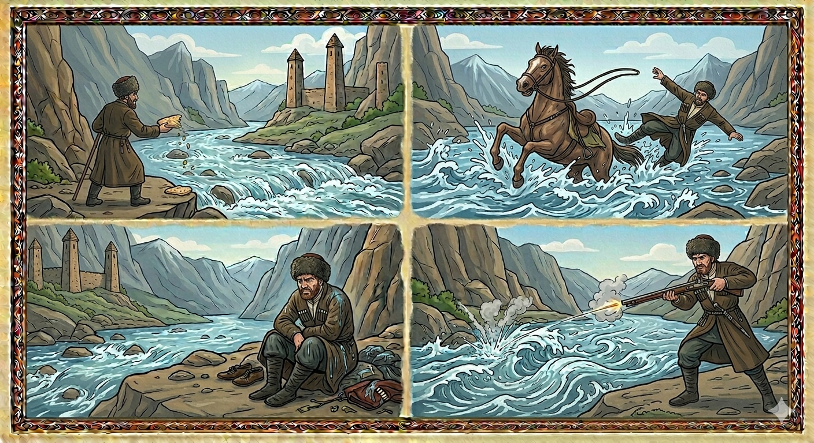

И.А. Дахкильгов. Хьехаме дувцарш - поучительные рассказы-притчи.
И.А. Дахкильгов. Хьехаме дувцарш - поучительные рассказы-притчи. Из ингушского фольклора.

Фартана теха топ
Наькъах ваьнна воагӀаш хиннав цхьа къонах. Ӏаьржа доагӀача хига кхаьчча, аьннад цо: - Фарта, хьо цӀи йолаш хий да, къонах вовзаш да, хьаьша маьрша вохийташ а да. Со, Дунда, маьрша дехьавалийта веза Ӏа, со хьоашалгӀа воагӀа хьо долча, - аьнна, дехьавала веннав къонах. Хи юкъе Ӏо а кхийтта, тӀавагӀа говра юха сехьа а йоалаш, халла Ӏовахьанза а ваьнна, ше дехьаваьлча, Дундас аьннад: - ГӀанжал-боса денза мел дола гӀадамаш, кхалаж, бӀеха мел йола хӀамеи хьона чу улл. Юрта юсте бенна уллача пхьара миссел цӀи яц хьа, ва Фарта. Нагахьа санна укх герзашца хьоца дов де са йиш яларе, аз ер дергдар хьона, - аьнна, хи чу топ техай Дундас.
РУССКИЙ
Выстрелил в реку Фарту
Некий горец отправился в путь. Подошел он к вспенившейся реке и сказал ей: “Река Фарта, ты всеми весьма почитаема, знаешься с настоящими мужчинами, хорошо принимаешь и провожаешь гостей. Я, Дунда, иду к тебе в гости. Без вреда переведи меня на другой берег”, - сказал горец и начал переходить реку. Но на середине реки конь споткнулся. Его крутануло и выбросило на прежний берег, а Дунду – на другой, тогда Дунда сказал, обращаясь к Фарте: “Ты течешь с далекого склона Ганжал, несешь с собою весь сор, навоз и всякую грязь, которая попадается тебе на твоем пути. Лежащего на окраине села пса больше чтят, чем тебя. Если можно было бы с тобою стреляться на ружьях, я с тобою вот так бы поступил”, - сказал Дунда и выстрелил в воды Фарты.
ENGLISH
He fired at the Fortanga River
A Highlander set off on his journey. As he approached the foaming river, he said to it: “River Fortanga, you are held in high esteem by all. You know true men; you welcome and see off guests well. I, Dunda, am coming to visit you. Carry me safely to the other bank.” The Highlander began to cross the river. But halfway across, the horse stumbled. It was thrown about and flung back to the original bank, while Dunda was thrown to the other. Then he said, addressing the river: “You flow from the distant slopes of Ganjal, carrying with you all the rubbish, manure, and every sort of filth that comes your way. A dog lying on the edge of the village is held in higher esteem than you. If I could have a shooting contest with you, this is what I would do,” said Dunda, and he fired his weapon into the waters of the Fortanga.
НОХЧИЙН
Фартанна тоьхна топ
Новкъа ваьлла вогӀуш хилла цхьа къонах. Дистина догӀучу хине кхаьчча, аьлла цо: - Фарта, хьо цӀе йолуш хи ду, къонах вевзаш ду, хьаша маьрша вохуьйтуш а ду. Со, Дунда, маьрша дехьавалийта веза ахь, со хьошалла вогӀу хьо долчу, - аьлла, дехьавала воьлла къонах. Хин йуккъе охьа а кхетта, тӀехь вогӀу говра йуха сехьа а йолуш, халла вахьанза а ваьлла, ша дехьаваьлча, Дундас аьлла: - ГӀанжал-басенан дуьйна мел долу гӀодамаш, кхеллеш, боьха мел йолу хӀумий хьуна чу Ӏуьллу. Йуьртан йистехь буьнехь Ӏуьллучу пхьерачул цӀе йац хьан, ва Фарта. Нагахь санна кху герзашца хьоьца дов дан сан йиш йалахьар, ас хӀара дийр дар хьуна, - аьлла, хин чу топ тоьхна Дундас.
ПОГОВОРКИ